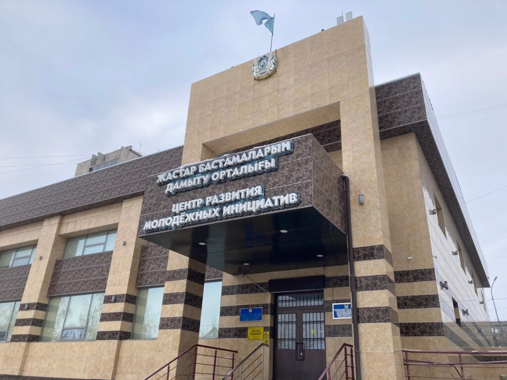

Центр является одной из ключевых площадок и платформой для формирования действенного инструментария поддержки молодежи различной категории. Введено в эксплуатацию в апреле 2013 года.
Первый в республике Центр, действующий по принципу «одного окна» по актуальный вопросам молодежи: содействие в трудоустройстве, участие в государственных жилищных программах, развитие молодежного предпринимательства, юридическая и психологическая поддержка молодежи и молодежных организаций.
В Центре осуществляют свою деятельность 6 центров/отделов:
Общая штатная численность сотрудников (с учетом технического персонала) – 43 человека.
Центр продолжает осуществлять свою деятельность по 3 основным модулям: сервисный, клубный и проектный.
Сервисный модуль функционирует по принципу «одного окна».
Молодому человеку в возрасте от 14 до 29 лет предоставляется первичная консультация по направлениям.
За отчетный период 2023 года проведено 82 140 консультаций для молодежи по актуальным вопросам, из них 5 642 консультации проводились на базе Центра в офлайн-режиме и 76 498 консультаций предоставлялись молодым людям в онлайн-режиме (с привлечением специалистов компетентных органов и информационных роликов).
Консультации в разрезе направлений:
По итогам 2023 года трудоустроено – 1 527 человек: на постоянную занятость – 1 163 человека; на временную занятость – 364 человека.
За отчетный 2023 год проведено и организовано 9 ярмарок вакансий, в которых приняли участие 1 382 соискателя и 299 работодателей; предложенные вакансии составили 2 387. По средствам ярмарки трудоустроено 560 человек.
Сервис психологической поддержки работал с привлечением внешних экспертов, охват составил 14 391 человек. Кроме того, проводились проекты: «Тиімді таңдау», адвайзер-выставка, тренинги, семинары, диалоговые площадки, разъяснения по жилищным программам «Шаңырақ», «7-20-25», «Умай», ипотечным и банковским услугам. Ежемесячно – «Ярмарка вакансий» с участием более 40 организаций региона.
Систематически проводились встречи с молодежью, экскурсии по центрам, проекты «Made in Pavlodar», молодежная летняя выставка «Арбат», проектный модуль, имиджевые мероприятия, работа с социально-уязвимыми слоями населения.
Центр проводит 447 мероприятий с охватом 147 847 человек, включая круглые столы, диалоговые площадки, конкурсы, тематические вечера, мастер-классы, кинокеш, волонтерские проекты и клубный модуль «Корпус С» с 12 клубами и Тик-ток студией, студией звукозаписи и коворкинг-центром.
Проходит ежегодная актуализация программ, методические дни, оценка качества Молодежных ресурсных центров, областной конкурс «Лучший МРЦ среди городов и районов Павлодарской области ТОП 5».